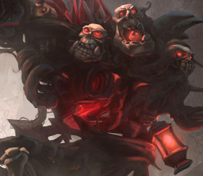

Download
CreepVO Necromancer 283 ALT2
Necromancer CastleAttack Blue00
Necromancer CastleAttack Red00
Necromancer CastleAttackAlly00
Necromancer CastleAttackAlly01
Necromancer Countdown10sec00
Necromancer Countdown1sec00
Necromancer Countdown2sec00
Necromancer Countdown30sec00
Necromancer Countdown3sec00
Necromancer Countdown4sec00
Necromancer Countdown5sec00
Necromancer CountdownRemain00
Necromancer Ending Blue00
Necromancer FirstBlood Blue00
Necromancer FirstBlood Red00
Necromancer FirstBloodAlly00
Necromancer FirstBloodEnemy00
Necromancer GameResumed00
Necromancer Gravestomp Observer00
Necromancer HeroSelect Observer00
Necromancer KeepDestroy00
Necromancer KeepDestroy Blue00
Necromancer KeepDestroy Red00
Necromancer Kill Observer00
Necromancer LevelAnnounce00
Necromancer LevelAnnounce01
Necromancer LevelAnnounce02
Necromancer MercCapture Blue00
Necromancer MercCapture Red00
Necromancer OutpostDestroy00
Necromancer OutpostDestroy01
Necromancer OutpostDestroy02
Necromancer OutpostDestroy03
Necromancer OutpostDestroy Blue00
Necromancer OutpostDestroy Red00
Necromancer OutpostLost00
Necromancer OutpostLost01
Necromancer OutpostLost02
Necromancer PlayerAbandon00
Necromancer PlayerRejoin00
Necromancer Revive Observer00
Necromancer SpreeEnd Ally00
Necromancer SpreeEnd Blue00
Necromancer SpreeEnd Enemy00
Necromancer SpreeEnd Red00
Necromancer SpreeFirstUpgrade00
Necromancer SpreeSecondUpgrade00
Necromancer SpreeStart Ally00
Necromancer SpreeStart Blue00
Necromancer SpreeStart Enemy00
Necromancer SpreeStart Red00
Necromancer SpreeThirdUpgrade00
Necromancer TalentUnlock00
Necromancer TalentUnlock01
Necromancer TalentUnlock02
Necromancer TeamKill Blue00
Necromancer TeamKill Red00